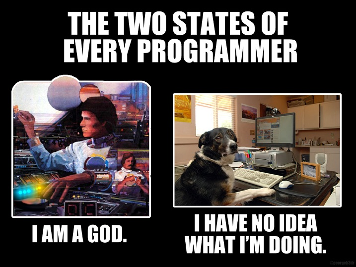
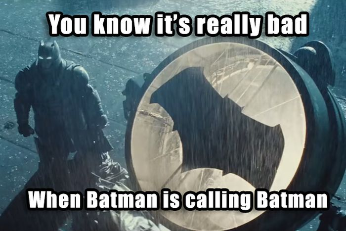

Daniele Scasciafratte
- Co Founder Codeat - Full Stack Developer
- Mozillian & Mozilla Reps Council & Mozilla TechSpeakers
- WordPress Core Contributor/Developer/Translator
- Open Source Multiversal
Me in 2010 after join Linux

Interface to Python code
- *.ui are XML files generated by QtDesigner
- pyuic4 -x mainWindow.ui -o MainWindow.py - for PyQt4
- pyuic5 -x mainWindow.ui -o MainWindow.py - for PyQt5
- Why?
- Better integration with IDE/Editor
- Better to read instead of a XML file
Time to try the interface with the boilerplate!

What are the Slots and Signals?
One of the key features of Qt is its use of signals and slots to communicate between objects. Their use encourages the development of reusable components.
Signal is emitted when something of potential interest happens.
Slot is a Python callable.
self.ui.newQuestionButton.clicked.connect(self.new_question)